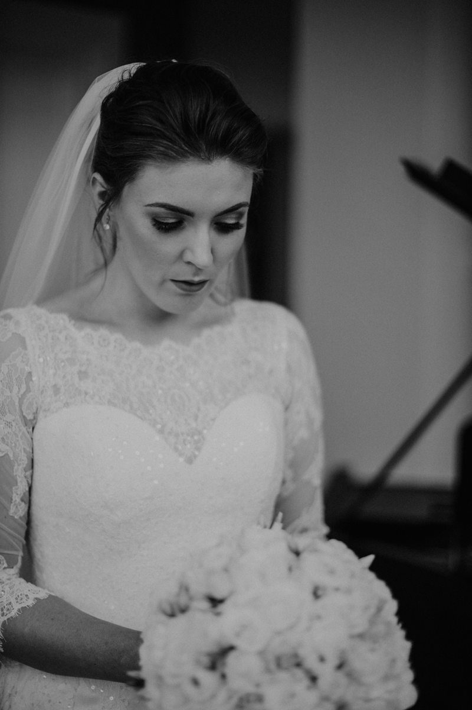

Our story
Jewellery with a past, chosen for your future.

Hi, I'm Louise, and Robyn is my daughter. I've been fascinated by jewels for as long as I can remember.
As a little girl, I would lose hours exploring my mother's jewellery box, captivated by the rings tucked away inside. Each piece felt like a tiny piece of history, carrying memories and milestones.
That fascination never really left me.
Robyn & Gold was born during one of the most challenging periods of my life. In the quiet hours of the night, while caring for a baby who rarely slept and needed to be held almost constantly, I found myself searching auction catalogues, estate sales and private collections long after the rest of the house had fallen asleep.
What began as a small escape quickly became something more.
Night after night, I discovered pieces that stopped me in my tracks. Rings that had celebrated engagements, anniversaries and milestones decades before. Jewellery with history, character and craftsmanship that deserved another chapter.
Today, every piece you see here is personally sourced by me. I look for jewellery that feels special the moment you hold it: beautiful antique, vintage and preloved rings with timeless design, exceptional quality and stories still left to tell.
Before being listed, each piece is carefully assessed, professionally cleaned and lovingly prepared so it arrives ready for its next custodian.
Robyn & Gold is a collection of treasures gathered slowly, thoughtfully and with genuine affection. I hope you find a piece that speaks to you as much as it did to me.